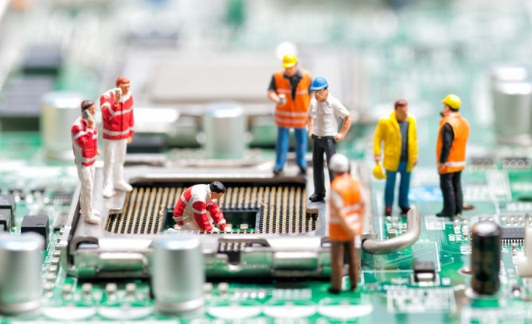
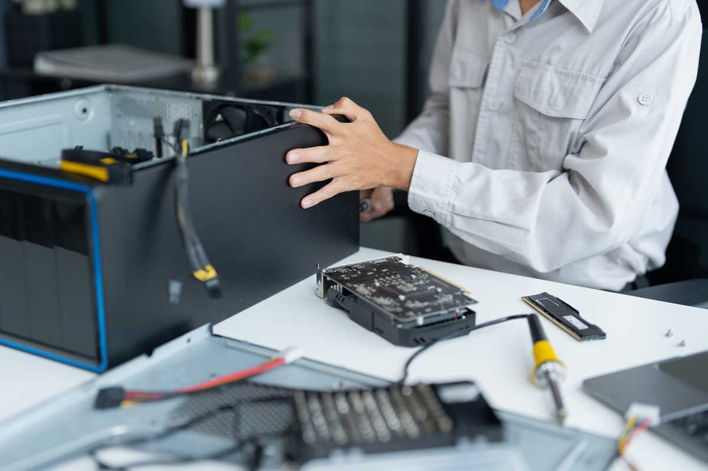
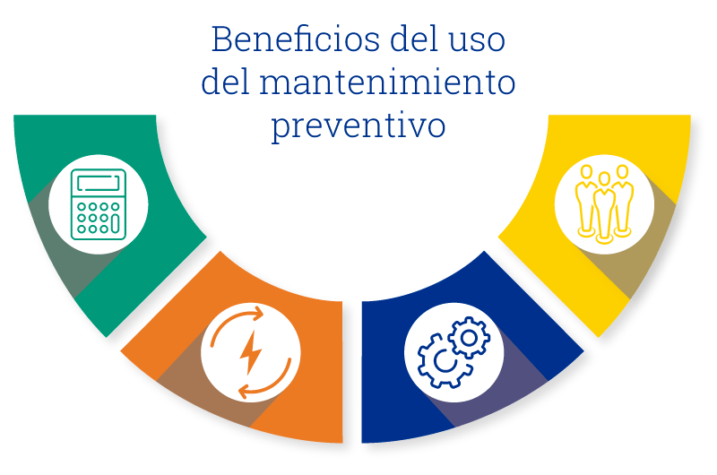

¿Qué es el mantenimiento de sistemas informáticos?
El mantenimiento de sistemas informáticos es el conjunto de actividades realizadas para garantizar el correcto funcionamiento de computadoras, redes, programas y dispositivos tecnológicos. Estas acciones permiten prevenir fallas, corregir errores y mejorar el rendimiento de los equipos, asegurando que trabajen de forma eficiente y segura. También ayuda a prolongar la vida útil del hardware y software, evitando daños que puedan afectar las actividades de una empresa o usuario.

Mantenimiento preventivo
El mantenimiento preventivo consiste en realizar revisiones y cuidados periódicos antes de que aparezcan problemas en el sistema informático. Incluye actividades como limpieza de equipos, actualización de programas, revisión de cables, eliminación de archivos innecesarios y análisis con antivirus. Su principal objetivo es reducir el riesgo de fallas y mantener el sistema funcionando correctamente durante más tiempo

Mantenimiento correctivo
El mantenimiento correctivo se realiza cuando el sistema ya presenta una falla o daño que afecta su funcionamiento. Este tipo de mantenimiento busca solucionar problemas como virus, errores del sistema, daños en componentes o pérdida de información. Gracias a estas reparaciones se logra restablecer el funcionamiento normal de los equipos y evitar que los problemas empeoren.
.png)
Mantenimiento predictivo
El mantenimiento predictivo se basa en el monitoreo constante del estado de los equipos para detectar posibles fallas antes de que ocurran. Para ello se utilizan herramientas de diagnóstico y programas que analizan el rendimiento del sistema, la temperatura y el estado de los componentes. Este mantenimiento permite prevenir interrupciones y reducir gastos de reparación inesperados.

Aseguramiento de la operación del sistema informático
El aseguramiento de la operación del sistema informático consiste en aplicar medidas y procedimientos que garanticen el funcionamiento continuo, seguro y eficiente de los sistemas tecnológicos. Su finalidad es proteger la información, mantener la estabilidad de la red y asegurar que los servicios informáticos estén disponibles cuando se necesiten, evitando pérdidas de datos o interrupciones.

Seguridad informática
La seguridad informática es una parte importante del aseguramiento de sistemas, ya que protege los equipos y la información contra amenazas como virus, hackers y accesos no autorizados. Para mantener la seguridad se utilizan antivirus, contraseñas seguras, firewalls y actualizaciones constantes. Estas medidas ayudan a proteger los datos y evitar daños en el sistema.
Respaldo de información
El respaldo de información consiste en crear copias de seguridad de archivos y datos importantes para evitar pérdidas en caso de fallas o accidentes. Los respaldos pueden almacenarse en discos externos, servidores o servicios en la nube. Gracias a esta práctica es posible recuperar información importante cuando ocurre algún problema en el sistema.
Monitoreo del sistema
El monitoreo del sistema permite supervisar constantemente el rendimiento y funcionamiento de los equipos informáticos. Se controlan aspectos como el uso de memoria, estado de la red, temperatura y rendimiento del procesador. Esto ayuda a detectar errores rápidamente y tomar acciones antes de que afecten el funcionamiento del sistema.

Actualización de software
La actualización de software consiste en instalar nuevas versiones de programas y sistemas operativos para mejorar su funcionamiento y seguridad. Estas actualizaciones corrigen errores, agregan nuevas funciones y protegen el sistema contra amenazas recientes. Mantener el software actualizado ayuda a que los equipos trabajen de forma más rápida y segura.

Herramientas utilizadas
En el mantenimiento y aseguramiento de sistemas informáticos se utilizan diferentes herramientas que facilitan la detección y solución de problemas. Entre ellas se encuentran los antivirus, programas de diagnóstico, software de monitoreo y herramientas de respaldo. Estas aplicaciones ayudan a mantener los equipos en buen estado y mejorar su rendimiento.

Importancia del mantenimiento y aseguramiento
El mantenimiento y aseguramiento de sistemas informáticos es importante porque garantiza el funcionamiento continuo y seguro de los equipos tecnológicos. Además, ayuda a proteger la información, reducir costos de reparación, mejorar la productividad y evitar pérdidas de datos. Gracias a estas prácticas los sistemas pueden operar de manera eficiente y confiable.
